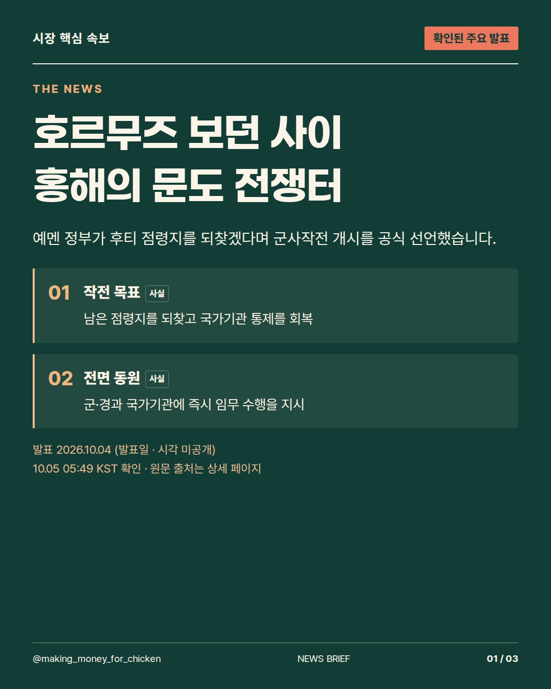
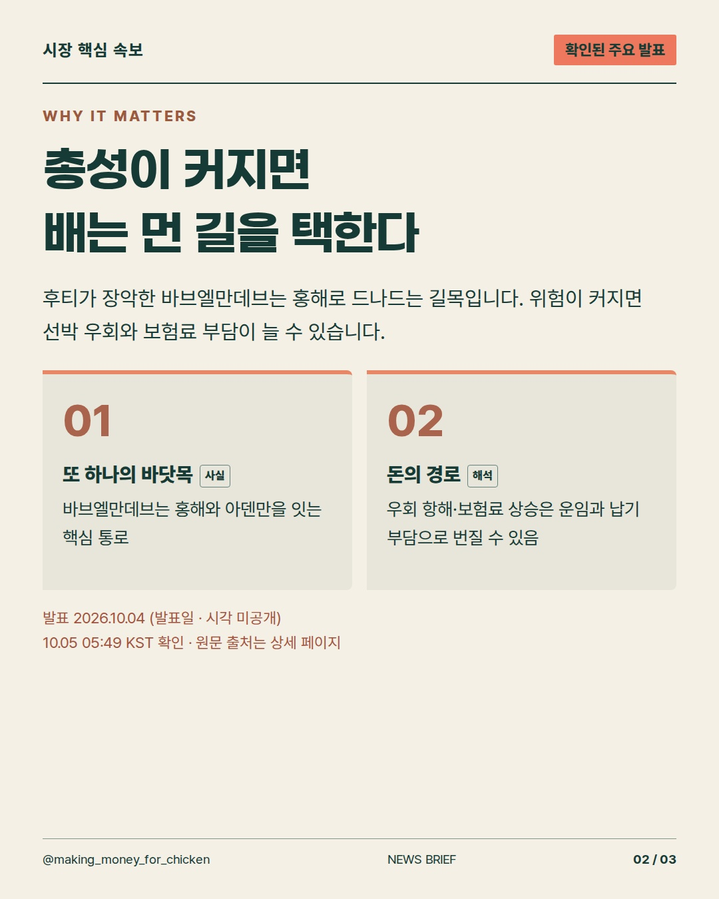
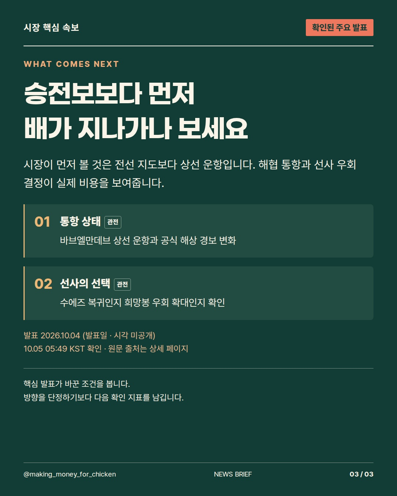

2026-10-04T20:49:50+00:00 확인 기준 · 발표 사실과 시장에 대한 해석을 구분합니다.
호르무즈만 보고 있었는데, 이번엔 홍해의 문이 전쟁터가 됐습니다. 예멘 정부의 작전 개시는 배가 돌아갈지, 운임표가 뛸지를 다시 묻게 합니다. #예멘 #홍해물류 #시장뉴스



사실·해석·관전 포인트를 구분한 정보 콘텐츠. 투자 참고용 · 매수·매도 권유 아님.